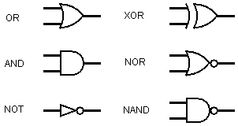
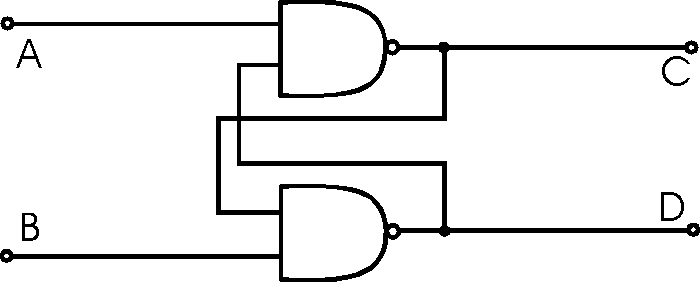

How Computers Work
DECEMBER 23, 2014
Lil Wayne looks confused. His face looks like my face looked when I first started researching this. Ultimately, I ended up researching this for way longer than I'd like to admit. (Definitely way longer than the 1 hour we're supposed to commit to blog posts). But once I started researching, computers just got cooler and cooler. This is DEFINITELY not even touching the tip of the digital iceberg on this one, but here's a little bit of what I learned.
Binary
Computers understand binary. This is different from our 10 digit system because it only consists of two digits: 1's and 0's. Wikipedia explains it in the following way:
In mathematics and digital electronics, a binary number is a number expressed in the binary numeral system, or base-2 numeral system, which represents numeric values using two different symbols: typically 0 (zero) and 1 (one). More specifically, the usual base-2 system is a positional notation with a radix of 2.
Transistors
Ok, we've all seen a light bulb. Transistors operate like a light switch, except instead of physically connecting and disconnecting wires, transistors connect/disconnect electricity flow by altering resistance. "On" and "off" can easily be translated to binary's 1's and 0's, respectively.
Logic Gates
Each logic gate has two inputs and only one output. The only input it accepts is "on" or "off"; the same goes for output. A logic gate's output is based on its input. This is like Boolean Logic aka AND statements, OR statements, NOT statements etc.
If we put the input of a NOT gate on the output of an AND gate we get a NAND gate. You can design a whole computer chip using solely NAND gates. That's how useful they are.
Computer Memory
This is a diagram of a memory holding thingy. It has the ability to hold a "bit" of memory.
A bit is like one digit of a binary number.
This is a diagram of an "adder" aka takes two numbers and adds them:
The gate on top is an XOR gate. It's output is "on" ONLY if one of its inputs is "on". If they're both on, or both off, then the output is off.
Code
Here's where code comes in. Basically, code is just data. It's only different from other data because CPU interprets it as a series of instructions. We can then set up which logic gates are being used based on data.
Conclusion?
Ok, I know this is a shit ton of information. And like I said, it barely covers it. If you're looking to go down a bit of a wormhole, here are some other things you might want to Google: CPU, Computer Memory, Microprocessor, or Turing Machine.
Looks like Lil Wayne is digging it.